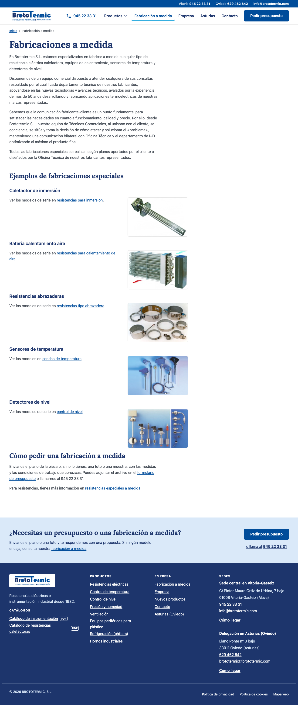
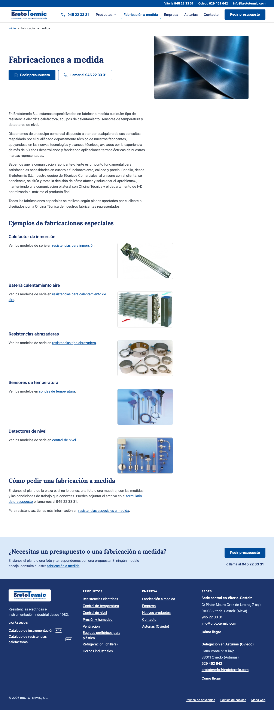

Imágenes y mejoras interiores
Evidencia local del bloque independiente de mejora/visual-imagenes. Los ambientes de familia y Oviedo están preparados; su integración espera los cambios de Juan. Los tres ensayos de retoque quedan rechazados. No se sustituyen originales.
Fabricaciones a medida, 1280 px.


Las capturas se conservan completas en resultado antes y resultado después. La interfaz nueva funciona también con el JavaScript de la página desactivado. Esta galería local necesita JavaScript para cambiar la selección; las imágenes iniciales siguen visibles sin él.